About Me
Hi!
My name is Jake!
I have a lovely family of five.
My wife, Paige, my dog, Dipper, and my three cats, Van, Ash and Lola.
They may not be kids, but they are just as much a handful for Paige and I and each of them has a personality of their own.
 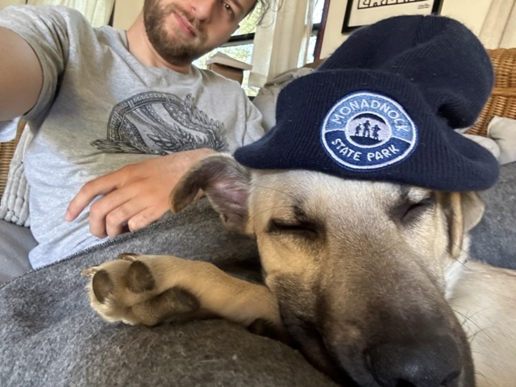
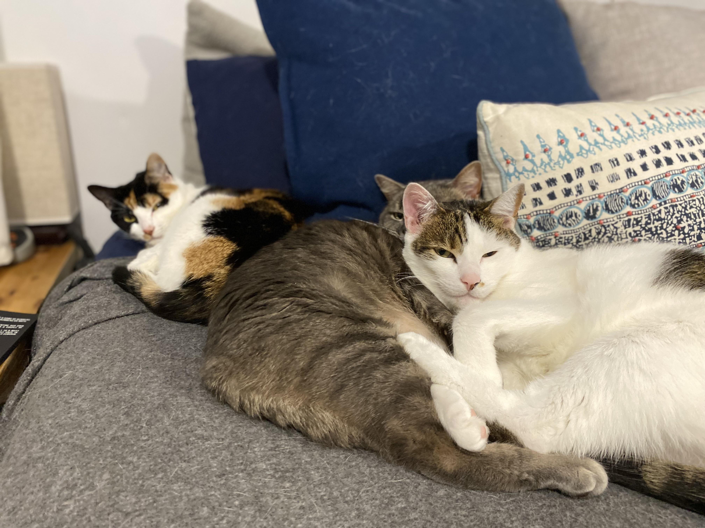
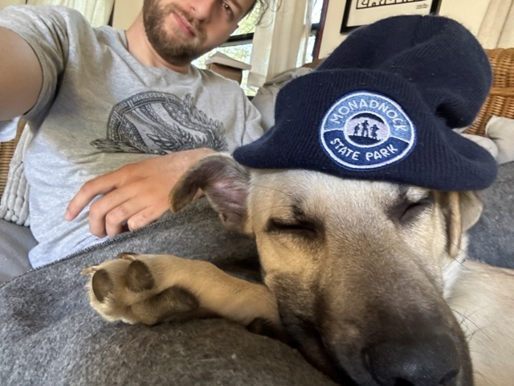
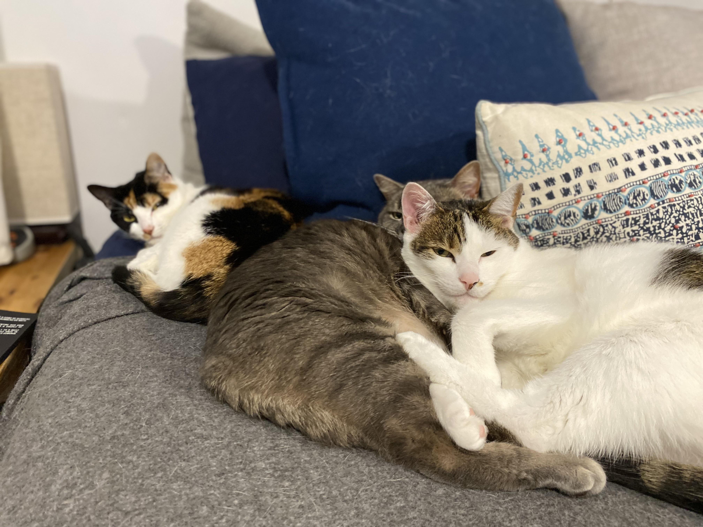
I spent seven years working as a Security & Automation Technician doing low-voltage electrical for the New England area. I progressed a lot with my communication and troubleshooting skills and customer relations. In between running training for new technicians, I was visiting customer sites to find and resolve service issues. Through this process, I continued to recognize how much growth there was in the software side of things and started learning skills in IT and networking.
After discovering how much my brother loved Full-Stack Web Development, I also decided to pursue becoming a Web Developer. I quit my job to study full-time, and that's where I am now, learning Full-Stack Web Dev and holding down the fort while my Paige works in Industrial Design.
The change has been a lot to get used to, but I am enjoying this time of creating my own schedule and pursuing my goals.
I have quite a few hobbies as well
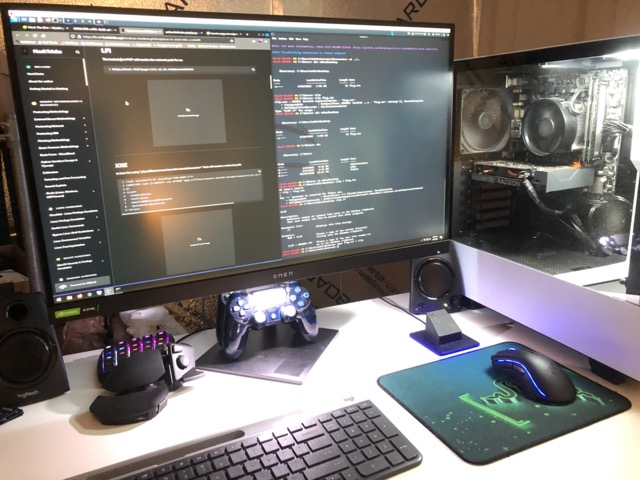 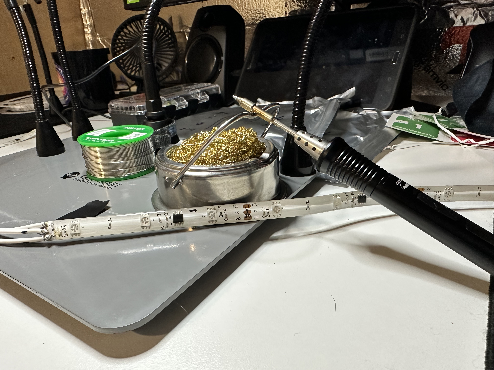 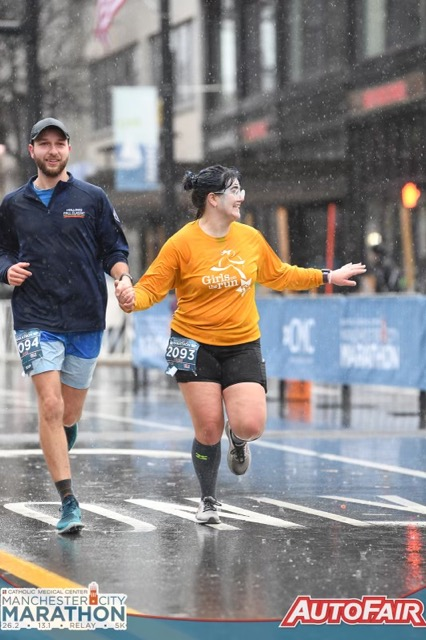 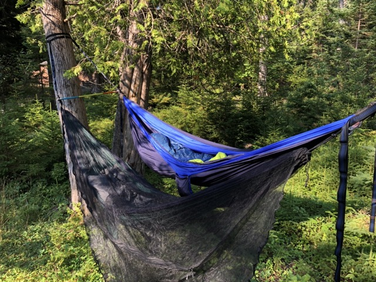
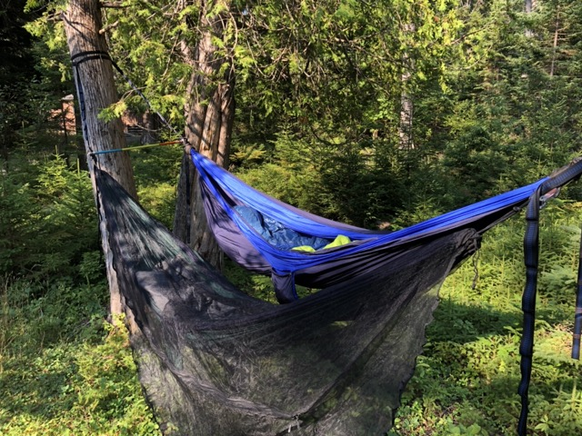
I have always loved computers and electronics; I built my gaming PC and have recently been enjoying Apex Legends. I also set up my home network with a pi-hole (ad/tracking blocker) and love messing around with Rasberry Pi and Arduino boards.
Paige and I built a Tiny House that we currently live in (pictures in projects below). We bought a travel trailer and renovated it to become our tiny house on wheels! My current fun project has been building custom LED lighting for a full-wall shelf system we built.
After helping a friend design and renovate their garage into a home gym, I have been getting increasingly into woodworking. I also enjoy hiking, hammocking, running, flying drones, sudoku, strategy board games, and my recent outdoor obsession has been Disc Golf.
What will be next?
Click button to generate
Projects
Tiny House
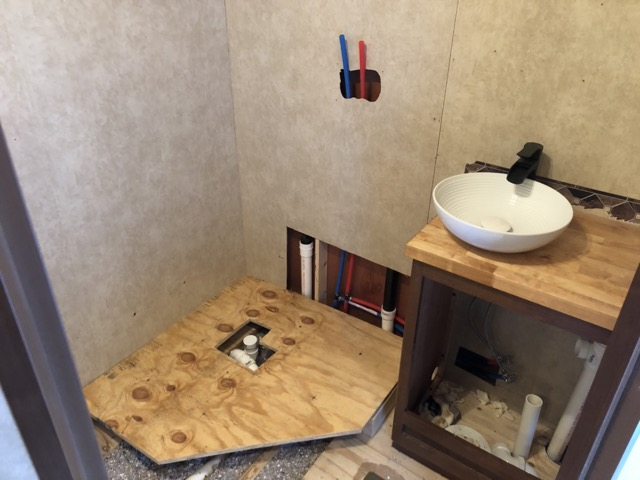
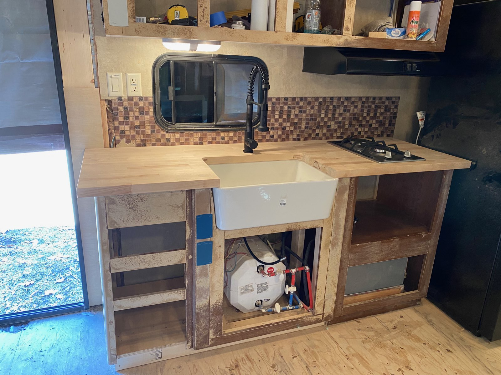
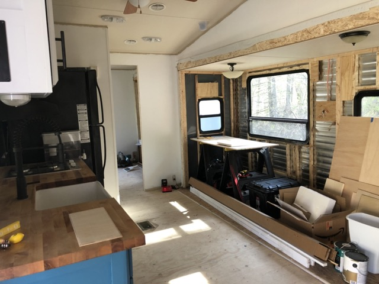
We bought the RV in the fall of 2020 during the pandemic and renovated it throughout the year until we moved in the fall of 2021. We were planning on just doing some interior renovations to make it less of an RV and more of a home, but we found out many RVs are not built to withstand New England weather; we had quite a few significant renovations to add to the list.
We have been living happily and enjoying the small footprint and balance of indoor/outdoor activities it provides.
Garage Home Gym
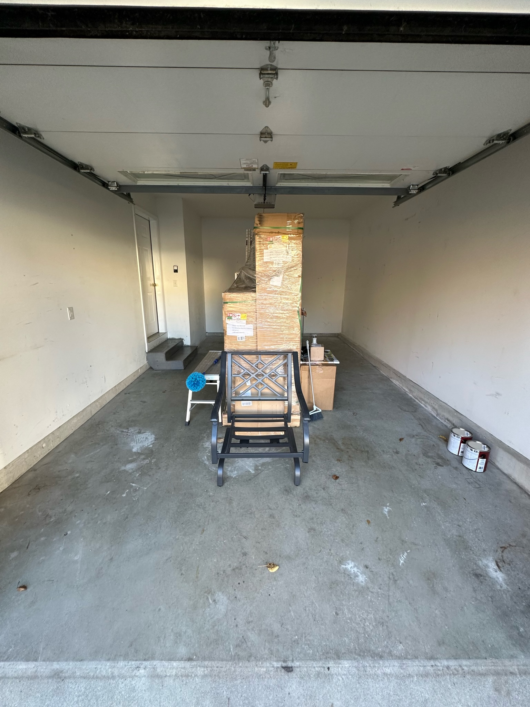
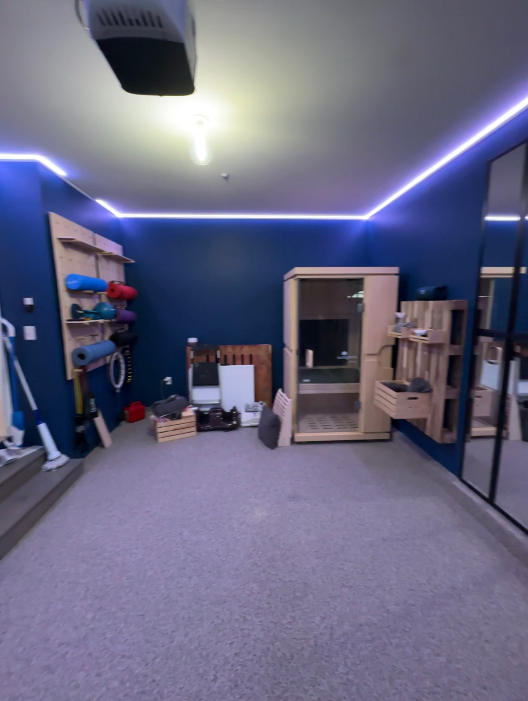
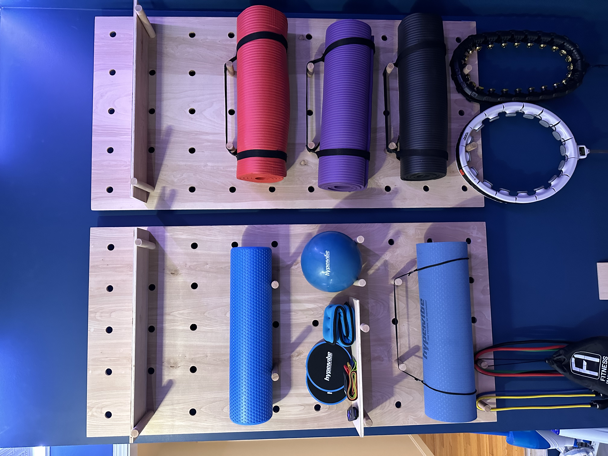
A friend approached me and asked me to collaborate on their Garage Home Gym renovation, to design a concept and work with them to put it into action. Through this process, we have talked about doing this together for others, as it was an enjoyable project and a great creative outlet.
The large pegboards pictured above were something that I had handmade. Although I can think of how I could make them better now, it is something I'm very proud of alongside the rest of the project.